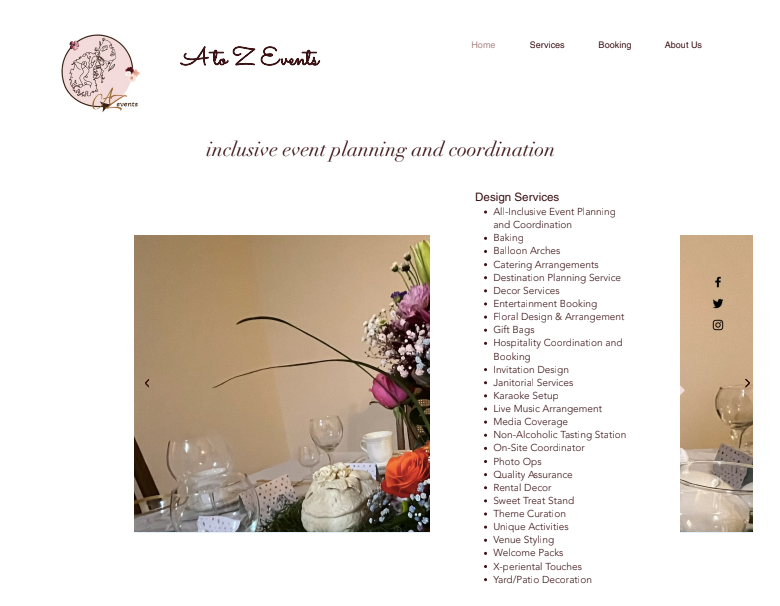

Project Description
This web development project, completed for Dr. Stewart Whittemore’s ENGL 7060 course, involved designing a functional website for a real-world client, A to Z Events. Moving beyond a standard technical assignment, this project served as a critical site of transition from theoretical technical communication to applied, client-centered design. The core objective was translating the client’s emerging brand identity, service structure, and business goals into a navigable digital environment that the client could meaningfully own. Ultimately, this project demonstrates that web development is not merely about building a site, but about empowering clients and shaping how users engage with structured content.
Rhetorical and Technical Decisions
A primary challenge at the start of the project involved rhetorically translating the client's clearly defined service identity and visual preferences into a highly usable information structure. I made technical and design decisions regarding page hierarchy, navigation, and service descriptions to ensure the homepage was visually inviting without overwhelming the user. During this process, I realized that usability must serve as the primary rhetorical metric; a visually polished site fails if users cannot smoothly locate information or complete tasks.
Furthermore, I had to negotiate competing priorities: my own design standards, the client's specific requests, and the technical limitations of building an accessible site. To ensure long-term sustainability and client advocacy, my final technical decision was to create a comprehensive maintenance guide and train the client on the backend. This empowered the client to act independently within the system, transforming the deliverable from a static product into a usable, ongoing tool.
Theoretical Connections
To ground my understanding of visual and structural design, I relied on Kostelnick and Roberts (2011), who emphasize that meaning in technical communication emerges fundamentally through design choices that dictate how users engage with content. Their principles of professional communication design reinforced my focus on accessibility and clarity to support long-term user engagement and empowerment.
When translating the client's identity into a digital environment, Redish (2012) guided my understanding that a website does not simply "display" information, but rather organizes and frames it. Her work reinforced my realization that clarity and immediate accessibility must be prioritized for successful task completion in digital spaces. Finally, as I navigated the inevitable tensions between design standards, client requests, and technical constraints, Spinuzzi's (2015) framework of networked activity helped me understand that workplace communication is distributed across networks of people, tools, and practices. Through this lens, I recognized that successful project outcomes emerge through active negotiation rather than simple linear execution.
View Project Documentation
View Website Documentation (PDF)References
- Kostelnick, C., & Roberts, D. (2011). Designing visual language: Strategies for professional communicators. Allyn & Bacon.
- Redish, J. (2012). Letting go of the words: Writing web content that works. Morgan Kaufmann.
- Spinuzzi, C. (2015). All edge: Inside the new workplace networks. University of Chicago Press.